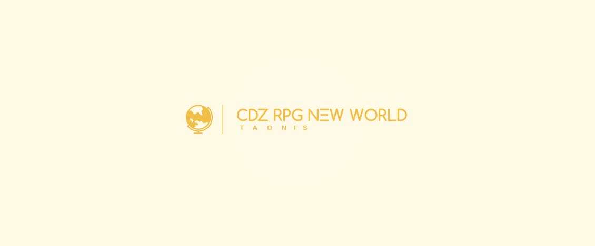

Bem-Vindos à página de armaduras do RPG. Com ela, é possível ver todas as armaduras existentes.
| Armaduras de CDZ | |||
|---|---|---|---|
| Santuário | |||
| vestes | habilidades | Elementos | Signos |
| Ouro | |||
| Áries | Cristal/Telecinese/Astromancia | Luz | Áries |
| Touro | Burst Cósmico | Terra | Touro |
| Gêmeos | Variável | Trevas | Gêmeos |
| Câncer | Fogo Fátuo/Seikishiky | Trevas | Câncer |
| Leão | Plasma/Fótons | Trovão | Leão |
| Virgem | Ilusão/Controle sobre o Ar | Luz | Virgem |
| Libra | Natureza | Água | Libra |
| Escorpião | Veneno/Paralisação | Fogo | Escorpião |
| Sagitário | Plasma/Ilusão | Luz | Sagitário |
| Capricórnio | Manipulação de energia | Luz | Capricórnio |
| Aquário | Controle de Cº.%/Temporal | Ar | Aquário |
| Peixes | Natureza/Veneno | Água | Peixes |
| Serpentario | Domínio Medicinal | Trovão | Ophiuchus |
| Prata - Lendária | |||
| Lira | Musical | Ar | Virgem |
| Taça | Controle da Umidade | Agua | Aquário |
| Altar | Fogo Fátuo/Seikishiky | Fogo | Câncer |
| Triângulo | Selo/Dimensional | Luz | Gêmeos |
| Prata | |||
| Cefeu | Burst Cósmico | Terra | Touro |
| Hércules | Controle sobre o Ar | Trovão | Leão |
| Perseu | Ilusão/Veneno | Terra | Escorpião |
| Cães de Caça | Ilusão | Luz | Peixes |
| Centauro | Aceleração dos átomos | Fogo | Sagitario |
| Auriga | Ilusão | Luz | Gêmeos |
| Mosca | Veneno | Ar | Peixes |
| Corvo | Ilusão | Trevaz | Gêmeos |
| Lagarto | Controle sobre o Ar | Ar | Libra |
| Baleia | Controle de Água | Água | Aquario |
| Cão Maior | Burst Cósmico | Luz | Capricórnio |
| Águia | Burst Cósmico/Projeção | Luz | Capricórnio |
| Cobra | Ionização dos Átomos | Trovão | Ophiuchus |
| Flecha | Ilusão | Luz | Sagitario |
| Cérbero | Burst Cósmico/Projeção | Fogo | Câncer |
| Pavão | Controle sobre o Ar | Ar | Virgem |
| Lótus | Telesinese/Manip de Energia | Ar | Virgem |
| Orion | Controle sobre o Ar | Trovão | Virgem |
| Vela | Controle sobre o Ar | Ar | Escorpião |
| Popa | Controle sobre o Ar | Ar | Libra |
| Cruzeiro do Sul | Aceleração dos Átomos | Fogo/Trovão | Leão |
| Girafa | Burst Cósmico | Terra | Peixes |
| Escudo | Burst Cósmico | Terra | Touro |
| Grou | Telesinese | Luz | Áries |
| Cristal | Cristal (Gelo Solido) | Agua/Ar | Aquario |
| Cinzel | Reparo | Terra | Áries |
| Tarântula | Projeção | Trevas | Câncer |
| Bronze - Lendária | |||
| Pégaso | Energia | Luz | Sagitario |
| Andrômeda | Controle sobre o Ar | Ar | Virgem |
| Fênix | Telecinese/Aceleração dos átomos | Fogo | Leão |
| Cisne | Controle de Cº.% | Ar | Aquário |
| Dragão | Controle sobre Agua | Água | Libra |
| Bronze | |||
| Hidra | Veneno | Terra | Peixes |
| Fornalha | Aceleração dos átomos | Fogo | Leão |
| Bússula | Controle sobre o Ar | Ar | Capricórnio |
| Cassiopéia | Manipulação de Energia | Fogo | Escorpião |
| Camaleão | Burst Cósmico | Luz | Áries |
| Unicórnio | Telecinese (Fraco) | Luz | Câncer |
| Lobo | Natureza/Energia | Terra | Câncer |
| Ursa Maior | Burst Cósmico | Terra | Touro |
| Leão Menor | Aceleração dos átomos | Fogo | Leão |
| Sextante | Astromancia | Luz | Áries |
| Quilha | Aceleração dos Átomos | Ar | Virgem |
| Lince | A. Atomos/Burst Cósmico | Ar | Gêmeos |
| Cabeleira de Berenice | Aceleração dos átomos | Fogo | Capricórnio |
| Coroa Boreal | Desaceleração Dos Átomos | Água | Água |
| Compasso | Elemental Terra | Terra | Touro |
| Dorado | Controle sobre a Água | Água | Libra |
| Volans | Controle sobre a Água | Água | Libra |
| Lebre | Burst Cósmico | Água | Peixes |
| Rena | Burst Cósmico | Ar | Virgem |
| Pomba | Aceleração dos átomos | Fogo | Escorpião |
| Cavalo Menor | Energia | Luz | Sagitario |
| Esquadro | Ionização dos Átomos | Trovão | Sagitario |
| Golfinho | Controle sobre a Água | Água | Aquário |
| Especial | |||
| Coruja | ? | ? | N/A |
| Divindade | |||
| Athena | Energia | Luz | N/A |
| Atlântida | |||
|---|---|---|---|
| Vestes | Habilidades | Elementos | Oceanos |
| General | |||
| Cavalo Marinho | Controle sobre o Ar | Ar | Pacífico Norte |
| Chrysaor | Telecinese | Luz | Índico |
| Dragão Marinho | Ilusão/Dimensional | Trevas/Luz | Atlântico Norte |
| Kraken | Controle de Cº.% | Ar | Ártico |
| Lymnades | Ilusão | Trovão | Antártico |
| Scylla | Natureza | - | Pacífico Sul |
| Sirene | Musical | Ar | Atlântico Sul |
| Comandante - Especial | |||
| Sereia | Ilusão/Musical | Ar | Atlântico Sul |
| Telquine | Controle sobre a Água | Água | Atlântico Norte |
| Comandante | |||
| Ancora | Burst Cósmico/M.Energia | Luz | Índico |
| Baleia Aural | Musical/Natureza | Ar | Pacífico Norte |
| Calamaro | Telecinese | Luz | Atlântico Norte |
| Cancro | Controle sobre a Escuridão | Trevas | Pacífico Sul |
| Gonostoma | Ilusões | Trevas | Atlântico Norte |
| Nereida | Musical | Ar | Atlântico Sul |
| Razzan | Controle sobre a Água | Agua | Pacífico Sul |
| Plesiossauro | Eletricidade | Luz | Índico |
| Selkies | Ar Frio/Ilusão | Ar | Ártico |
| Troll Marino | Telecinése | Ar | Ártico |
| Tubarão | Manipulação de Energia | Agua | Antártico |
| Nereu | Controle sobre a Água | Trovão | Antártico |
| Níades | Corrente de Ar | Trevas | Pacífico Norte |
| Symplegades | Natureza | Terra | Atlântico Norte |
| Peixe-Vampiro | Telecinése | Agua | Atlântico Sul |
| Soldado | |||
| Camarão | Eletricidade | Trovão | Índico |
| Leviathan | Controle Climático | Água | Ártico |
| Capoacinto | Burst Cósmico | Luz | Índico |
| Cídipe | Ilusão | Trevas | Atlântico Norte |
| Estrela Marina | Corrente de Ar Frio | Água | Ártico |
| Esqualo | Burst Cósmico | Trevas | Pacífico Sul |
| Foca | Burst Cósmico | Água | Antártico |
| Kobold Marino | Ilusão | Luz | Antártico |
| Mastro | Corrente de Ar | Ar | Pacífico Norte |
| Moréia | Ilusão | Luz | Pacífico Sul |
| Peixe Ângelo | Telecinese | Luz | Atlântico Sul |
| Peixe Picasso | Corrente de Ar | Ar | Pacífico Norte |
| Peixe Rambo | Controle sobre Água | Água | Pacífico Norte |
| Peixe-Espada | Burst Cósmico | Luz | Atlântico Sul |
| Peixe Soldado | Telecinese/Musical | Ar | Atlântico Sul |
| Polvo Negro | Ilusão | Luz | Antártico |
| Raia Manta | Ilusão | Trevas | Índico |
| Requim | Dimensional | Trevas | Atlântico Norte |
| Peixe Ângelo | Burst Cósmico | Água | Pacífico Sul |
| Orca | Burst Cósmico/Ar Frio | Água | Ártico |
| Tortuga | Dimensional | Água | Atlântico Norte |
| Especial | |||
| Tritão | Natureza/Corrente de Ar | Trovão/Água | ? |
| Divindade | |||
| Poseidon | Natureza | Água | ? |

| Taonis | |||
|---|---|---|---|
| vestes | Habilidades | Elementos | Animais |
| Tattos - Especial | |||
| Hakutaku | Corrente de Ar | Ar | Yokai |
| Pardal | Ilusão | Ar | Passaro |
| Kyuubi | Seikishiki | Fogo | Raposa |
| Javali Selvagem | Natureza | Terra | Javali |
| Tattos - Sugestão | |||
| Garuda | Corrente de Ar | Ar | Águia Hindu |
| Byakko | Elemental | Luz | Trigue |
| Genbu | Natureza | Terra | Tartaruga |
| Seiryu | Controle sobre a Água/Seikishiki | Água | Dragão |
| Suzako | Manipulação do Fogo | Fogo | Ave |
| Shukaku | Elemental | Terra/Vento | Guaxinim |
| Yonbi | Magma | Fogo/Terra | Macaco |
| Chomei | Feios/Elemental | Ar | Borboleta |
| Kokuo | Ebulição | Água/Fogo | Cavalo |
| Saiken | Veneno | Água | Lesma |
| Gyuki | Burst Cósmico | Ar | Lula Gigante |
| Jubi | Ilusão/Terra | ? | Coelho |
| Panda - Vermelho | Ilusão | Terra/Fogo | Panda |
| Kapa | Controle sobre a Água | Água | Sapo |
| Heikegani | Seikishiki | Luz/Trevas | Caranguejo |
| Kirin | Seikishiki/Ilusão | Fogo | Cachorro |
| Yatagarasu | Seikishiki | Luz | Corvo |
| Bake-Neko | Ilusão/Manipulação do Fogo | Trevas/Fogo | Gato |
| Komainu | Seikishiki | Terra | Leão |
| Divindade | |||
| Hakuryu | Natureza | Agua | N/A |
| Submundo | |||
|---|---|---|---|
| Vestes | Habilidades | Elementos | Estrela |
| Juízes | |||
| Wyvern | Escuridão | Trovão | Fúria |
| Griffon | Fios/Telecinese | Trevas | Nobreza |
| Garuda | Gravidade | Trevas | Heroísmo |
| Liderança | |||
| Atavaka | Ilusão/Sekishiki | Trevas | Liderança |
| Mefistófeles | Dimensional | Trevas | Liderança |
| Celeste | |||
| Alraúne | Manipulação de Energia | Trevas | Demoniaca |
| Aqueronte | Corrente de Ar | Trevas e Água | Hiato |
| Balron | Telecinese | Trevas | Eminência |
| Basilisco | Veneno | Ar | Perspicácia |
| Benu | Magma | Fogo | Violência |
| Behemoth | Burst Cósmico | Trevas | Solidão |
| Cetus | Burst Cósmica | Água | Dor |
| Vampiro | Especial | Especial/Trevas | Longevidade |
| Esfinge | Musical/Som | Trevas | Besta |
| Golem | Natureza/Telecinese | Terra | Chifre |
| Hanuman | Telecinése/Sekishiki | Trevas | Habilidade |
| Harpia | Sekishiki | Trovão/Trevas | Clamor |
| Lycaon | Escuridão | Trevas | Crime |
| Mandrágora | Som | Ar | Ferimento |
| Minotauro | Burst Cósmico | Trovão | Prisão |
| Nasu | Escuridão | Trevas | Contemplação |
| Troll | Manipulção de Energia | Terra | Derrota |
| Besouro mortal | Burst Cósmico | Terra | Feiúra |
| Driade | Controle da Natureza | Terra | Ascensão |
| Terrestre | |||
| Cat Sidhe | Especial | Especial | Fera |
| Deep | Veneno | Trevas | Trevas |
| Dullahan | Seikishiki | Trevas | Sombra |
| Kageboshi | Seikishiki | Trevas | Repouso |
| Morcego | Som | Ar | Premonição |
| Papillon | Especial | Luz | Encantada |
| Sapo | Burst Cosmico | Terra | Bizarra |
| Sylph | Ventos Negros | Ar | Voo |
| Upir | Sangue | Fogo | Causa |
| Verme | Burst Cósmica | Terra | Submissão |
| Elfo | Natureza | Terra | Depreciação |
| Deuses Gêmeos | |||
| Thantos | Morte/Dimensional | Trevas | Morte |
| Hypnos | Ilusão /Dimensional | Trevas | Sono |
| Deuses Menores | |||
| Oneiros | Manipulação de Energia | Trevas | Deus do sonho |
| Icelos | Dimensional | Trevas | Deus do sonho |
| Phantasos | Dimensional | Trevas | Deus do sonho |
| Morpheus | Dimensional/Ilusão | Trevas | Deus do sonho |
| Especiais | |||
| Pandora | Energia | Trevas | N/A |
| Divindade | |||
| Hades | - | Trevas | N/A |